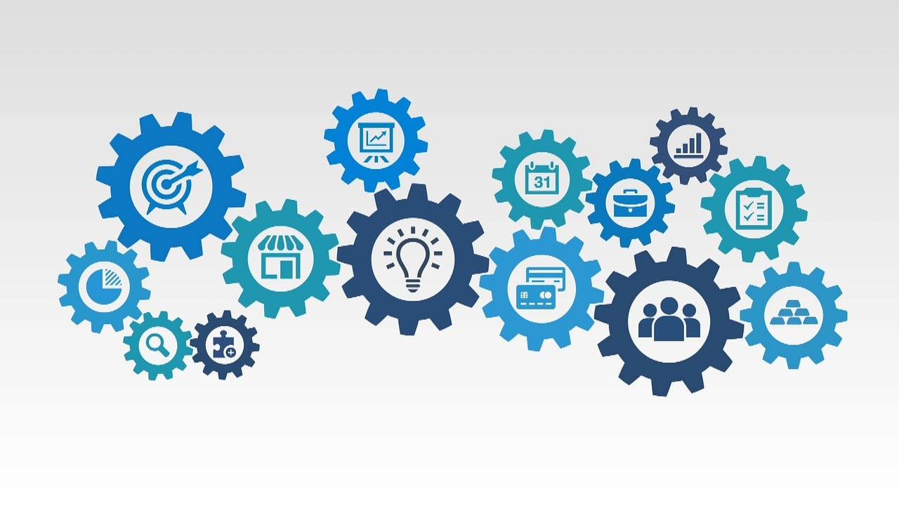

My Professional Journey
Results-oriented, outcomes-focused QA engineer and Team Lead with 5+ years experiences with Accenture and KPMG; adept in all phases of software development (SDLC) including Agile Scrum and Scaled Agile Framework. DevOps enthusiast regrading bridging IT and operations, leveraging technological capabilities to comprehensively address buiness challenges with end-to-end solutions. Skilled in developing, implementing, integrating, and executing software development projects. Exceptionally adept in quickly learning and utilizing new technologies.
